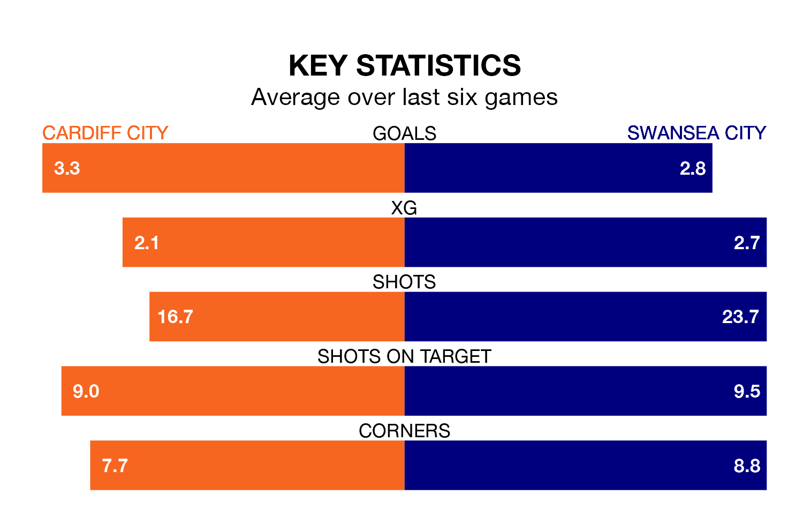

Welsh Premier Women's League's top two sides face each other in Sunday's late kick-off, when Cardiff City host second-placed Swansea City.
Cardiff have picked up 11 wins and one draw from 13 games so far this season, and sit five points above the visitors going into the 5.010pm match.
The Swans, meanwhile, have won nine and drawn two, picking up 29 points.
With 41 goals in 13 games so far this season, Cardiff are the league's highest scorers with 3.2 goals per game. And they are conceding fewer than average, letting in six goals at a rate of 0.5 per game.
Swansea are also above average scorers, with 2.5 goals per game, compared to a league average of 1.8. They have conceded 0.9 goals per game.
Cardiff City are in fantastic form in Welsh Premier Women's League, with five wins and one loss from their last six games.
But with five wins and a draw over that period, Swansea City's form is even better – they have taken 16 points from 18, compared to the hosts' 15.
In the last 10 years, Cardiff and Swansea have played each other on 11 occasions. Cardiff won four of them, Swansea five, and they drew twice.
On average, Cardiff scored 1.2 goals and the Swans 2.2 in those matches.
Their last meeting was on November 5, when Cardiff won 1-0 away.
Cardiff's last match was on February 4, a 3-1 win against Barry Town United Women.
Swansea drew 1-1 with Aberystwyth Town last time out, also on February 4.
Updated: 10:01 (UTC), 06/02/24